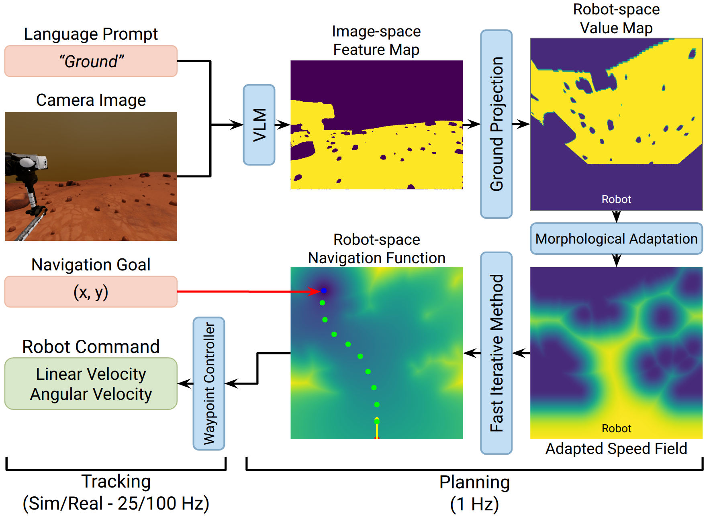
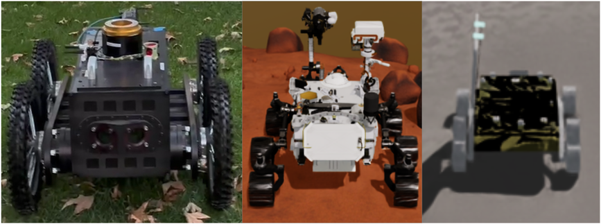
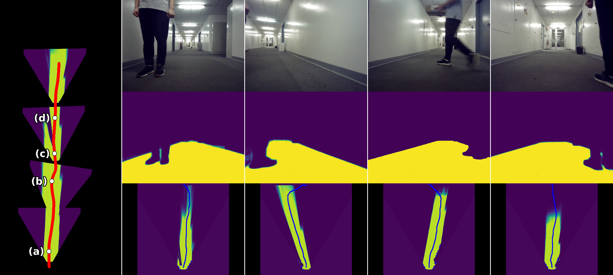
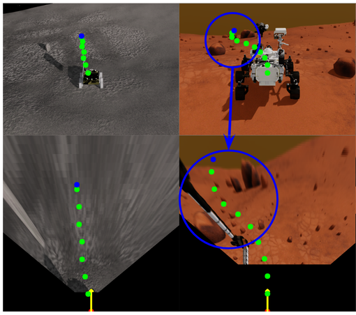
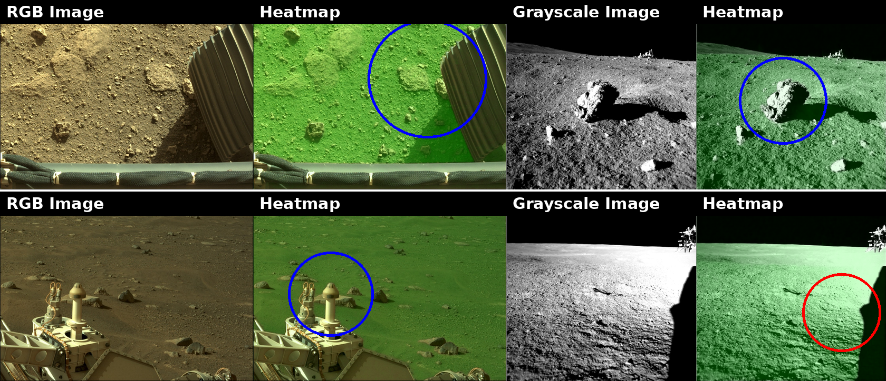
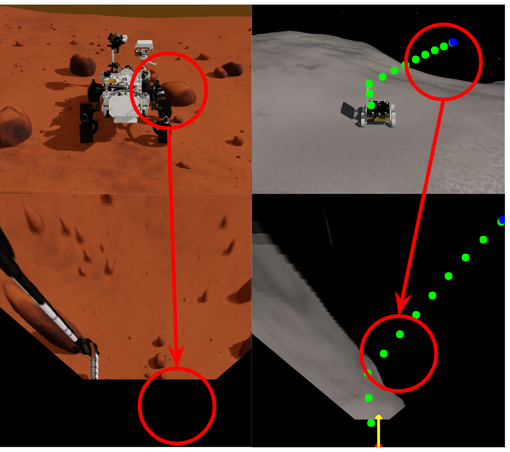

Semantics can provide a proxy for physical traversability. Terrain that looks like loose sand or a rock field is likely to have similar physical properties. Open-vocabulary vision-language models (VLMs) enable this physical reasoning over terrain outside any fixed label set.
We present Open-world Language-conditioned Speed Fields (OWLS), which plans directly over the dense feature map of a VLM. Prompted with a description of traversable terrain, the VLM scores every pixel of a single camera image; OWLS projects these scores onto the ground, adapts them to the platform with two morphological operations, and uses the result as the speed field of a minimum-time planner, so terrain appearance and obstacle clearance shape one trajectory.
OWLS needs no task-specific training, no terrain annotation, no persistent map, and no exteroceptive sensor beyond the camera. We evaluate it on a physical rover indoors and off-road, on simulated Mars and Moon rovers over 200 procedurally generated terrains, and on real planetary imagery.
OWLS does not train a policy or build a map. It asks an off-the-shelf VLM which pixels match a description of traversable terrain, and plans the fastest path through that answer.

The VLM scores each pixel against the prompt; the scores are ground-projected into the robot frame, adapted to the platform by dilation and erosion, and used as the speed field of a minimum-time planner, whose trajectory a waypoint controller tracks.
Moving to a new rover takes a measurement, not retraining: two morphological radii, set from the rover's geometry, decide which obstacles it can drive over and how much clearance it keeps.

Real 4-wheeled rover (left), simulated Perseverance (middle), and simulated Pragyan (right).
With one RGB camera and a laptop GPU, OWLS cleared static obstacles indoors and off-road in every trial, and avoided people and boxes moving through a hallway in 4 of 5. Because it keeps no map, each plan uses only the current image, so a person who has walked past no longer blocks the path.
Off-road, static obstacles.
Indoors, a person crossing the rover's path.

Each perception cycle replans over the ground left unoccupied at that moment, so the heatmap excludes each person as they cross.
| Environment | Obstacles | GSAM2 | DINOv3-patch | DINOv3-lang |
|---|---|---|---|---|
| Indoor | Static | 100 | 40 | 0 |
| Indoor | Dynamic | 80 | 20 | 0 |
| Outdoor | Static | 100 | 40 | 0 |
| Outdoor | Dynamic | 40 | 0 | 0 |
Success rate (%) of the real rover over 5 randomized trials per configuration, for OWLS planning over each feature map. Moving obstacles outdoors remain hard: under-segmentation in uncontrolled lighting and the lag between perception and control cost 3 of 5 trials.
Without fine-tuning, OWLS reaches a goal 10 m away on 58–60% of 100 unseen Martian terrains and 75–77% of lunar ones, more than twice the success of the NoMaD navigation foundation model on the same terrains, and faster on the terrains both solve.
| Method | Perseverance (Mars) SR | Perseverance STE | Pragyan (Moon) SR | Pragyan STE |
|---|---|---|---|---|
| NoMaD | 23.0 | 0.119 | 35.0 | 0.217 |
| OWLS + GSAM2 (ours) | 58.0 | 0.319 | 75.0 | 0.561 |
| OWLS + SAM 3 (ours) | 60.0 | 0.319 | 77.0 | 0.597 |
Success rate (SR, %) and success-weighted time efficiency (STE) over the same 100 generated terrains per rover.

Third-person (top) and top-down (bottom) views, for visualization only. Left: a valid path on the Moon, whose appearance lies far outside the VLM's training data. Right: threading two rocks on Mars with the clearance the erosion adds.
Since OWLS plans over the VLM's response to the prompt, asking for "rocks" instead of "ground" marks the hazards as traversable and drops success on Mars from 58% to 10% with Grounded SAM 2. The same dependence makes language brittle: with SAM 3, replacing "ground" by "area" or "region" yields empty masks and 0% success, so a wording must be checked against the VLM before deployment.
On frames from the real Perseverance and Chandrayaan-3 Pragyan rovers, none used during development, the VLM separates ground from hazards across the domain gap but misreads deep shadow under extreme lighting.

Left: Mars (AI4Mars). Right: Moon (ISRO navcam). Each pair shows the input and the VLM's traversability heatmap (brighter is more traversable). Blue circles mark hazards correctly excluded; the red circle marks a shadowed region misclassified as obstacle under extreme lighting.
Keeping no map has a cost: the most common failure is an obstacle forgotten once it leaves the camera's view. The flat-ground projection also misreads steep slopes, and the off-the-shelf VLM needs more compute than flight hardware offers today.

Left: on Mars, an obstacle forgotten after leaving the field of view. Right: on the Moon, a slope read as a cliff by the flat-ground projection.
Real rover, off-road
Real rover, indoors, people crossing
Perseverance, simulated Mars
Pragyan, simulated Moon
A portion of this research was carried out at the Jet Propulsion Laboratory, California Institute of Technology, under a contract with the National Aeronautics and Space Administration (80NM0018D0004).
@article{ku2026owls,
title = {OWLS: Open-world Language-conditioned Speed Fields for Zero-Shot Rover Navigation},
author = {Ku, Chahyon and Tevere, Erica and Georgakis, Georgios and Mukherjee, Rudra and Bucher, Bernadette},
journal = {arXiv preprint arXiv:2610.32596},
year = {2026}
}